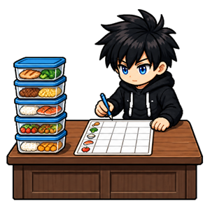
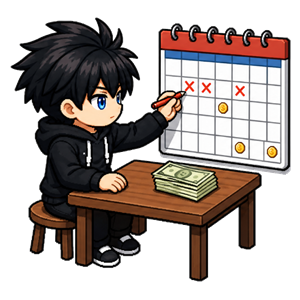

Habitudes financières
Reprendre la main sur son argent. Sept habitudes sans tableur, sans privation et sans jugement sur ce que tu gagnes.


À quoi servent les habitudes financières
Cette discipline ne te demande pas de gagner plus, ne juge pas ce que tu dépenses et ne te promet pas de devenir riche. Elle traite un problème beaucoup plus banal : l'argent stresse surtout quand on ne sait pas où il va. Le flou coûte plus cher que les dépenses elles-mêmes, parce qu'il empêche de décider.
Savoir où ça part
Noter ses dépenses et vérifier son solde ne changent rien à ton budget le premier jour — et c'est normal, ce n'est pas leur rôle. Elles servent à voir. Éviter son compte bancaire ne le fait pas remonter : ça repousse simplement la mauvaise nouvelle, en la laissant grossir. Une dépense notée par jour suffit à faire apparaître, en trois semaines, une habitude de consommation qu'on ne soupçonnait pas.
Reprendre la main
Mettre de côté et se fixer une limite installent une décision prise à froid, loin du moment de l'achat. Cinq euros dans la semaine ne construisent aucune fortune, et ce n'est pas le but : c'est le geste qu'on installe, pas le montant. Une limite fixée au calme tient bien mieux qu'une bonne résolution prise devant la caisse.
Anticiper
Prévoir ses repas, planifier ses charges et apprendre une notion regardent devant. L'alimentation est le poste où l'imprévu coûte le plus cher — on n'achète pas mal parce qu'on choisit mal, mais parce qu'on choisit au dernier moment, affamé. Quant aux charges annuelles, une dépense prévue cesse d'être une mauvaise surprise : elle devient une ligne dans un plan.